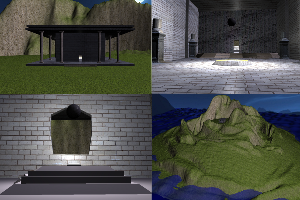
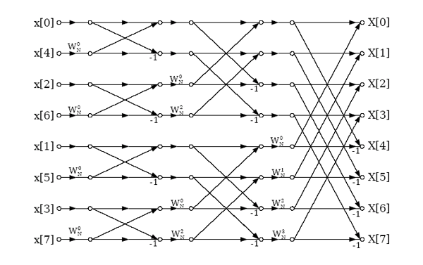
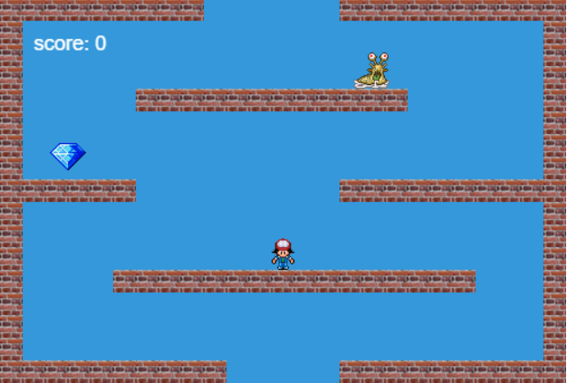

Projects
Interactive Computer Graphics - Island Temple Rendering

- Created simple model viewer (Using OpenGL with C++, GLUT, ANGEL library).
- Terrain rendering from a height map with water simulation around it.
- Implemented a flying camera for first person exploration.
Fast Fourier Transform

- Implemented the Fast Fourier Transform in C and in Cuda C.
- The Goal was to measure the improvement in efficiency achieved from implementing the radix-2 DIT case in Cuda.
- The code was compiled and executed on Texas Advanced Computing Center’s Maverick with 132 NVIDIA Tesla K40 GPUs.
Brick Breaker Game

- Developed a 2D brick breaker game with different levels in Unity 3D using C# scripts.
- Published on the Google Play App Store
- Click Here for the Game
Phaser Super Diamond Box Game

- Developed web page games using the Phaser HTML5 2D game framework & Javascript.
- Configured for play on mobile devices.
⛌